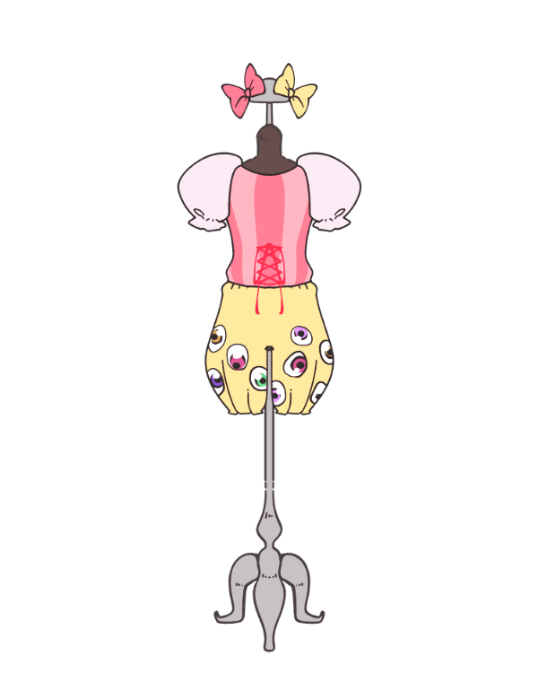

Kyary's COSTUME
PONPONPON
Released date:2011.7.20
カラフルで大きな目玉の模様がついた、インパクトのある衣装。
「きゃりーぱみゅぱみゅ」というアーティストを強く印象づけているよ。
Released date:2011.7.20
カラフルで大きな目玉の模様がついた、インパクトのある衣装。
「きゃりーぱみゅぱみゅ」というアーティストを強く印象づけているよ。
Released date:2012.1.11
デカリボンと、胸元についた大きな「つけま」がカワイイ！
スカートに使われているのは、本物のお菓子の袋なんだって。
Released date:2012.4.4
曲の名前にピッタリな、つやつやのキャンディみたいな衣装。
ゆめかわなピンクとパープルが素敵！
Released date:2012.10.17
ストライプ模様と、ビビッドなレッドのフリルがたっぷりで
甘辛なコーディネートが斬新！
Released date:2013.3.20
忍者みたいなパンツスタイルも素敵！
ところどころに入ったビビッドカラーがアクセントに。